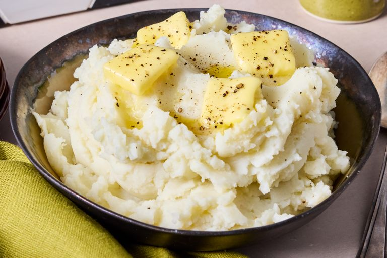

Mashed Potatoes

Description
Mashed potatoes are a classic, comforting side dish made by boiling or
steaming peeled potatoes until tender and mashing them with rich
ingredients like butter and milk.
Known for their velvety, creamy texture and mild, savory flavor, they
serve as a versatile staple alongside roasted meats, grilled vegetables,
or hearty gravies.
Ingredients
-
Potatoes. 1 kg (about 2 lbs) of starchy or all-purpose potatoes (such as
Russet or Yukon Gold), peeled and cut into even 1.5- to 2-inch chunks.
-
Butter. 2 to 4 tablespoons of unsalted butter, diced into small pieces.
-
Milk or Cream. ½ to 1 cup of whole milk (or heavy cream for extra
richness).
-
Garlic. 2 to 3 peeled garlic cloves (optional, for subtle flavor).
-
Seasonings. Salt to taste (plus 1 tablespoon for the boiling water) and
freshly ground black pepper.
- Garnish. Chopped fresh chives or parsley (optional).
Steps
-
Boil the potatoes. Place the potato chunks and optional garlic cloves
into a large pot and cover them with cold water by about 1 inch. Stir in
1 tablespoon of salt, bring to a boil over high heat, then reduce to a
gentle simmer for 15–20 minutes until the potatoes are easily pierced
with a fork.
-
Warm the dairy. While the potatoes cook, gently heat the milk and butter
together in a small saucepan over low heat (or in the microwave) until
the butter melts. Keeping the dairy warm helps prevent the potatoes from
turning gummy.
-
Drain and dry. Drain the cooked potatoes thoroughly in a colander, then
return them to the warm pot over low heat for 1 to 2 minutes, stirring
gently to let excess moisture evaporate.
-
Mash the potatoes. Remove the pot from the heat and mash the potatoes
using a potato masher or potato ricer until smooth.
-
Fold in the dairy and season. Gradually pour the warm milk and butter
mixture into the potatoes, folding gently with a spatula until creamy
and well combined—avoid overmixing. Season with salt and black pepper to
taste, then serve warm topped with fresh herbs.
Home